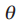
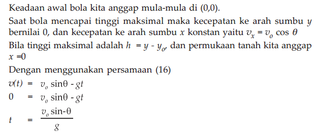
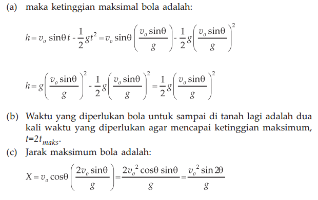
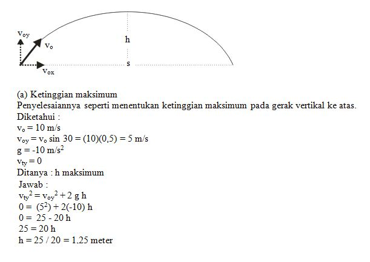
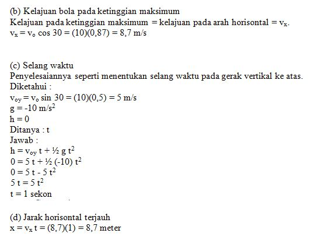
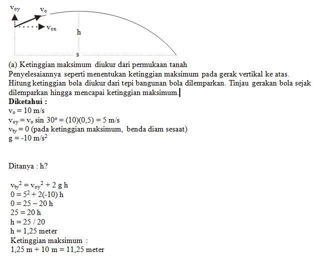
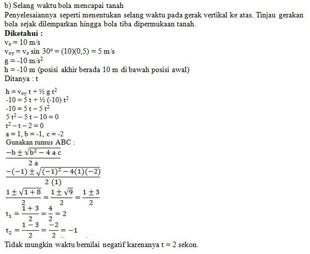
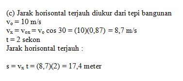
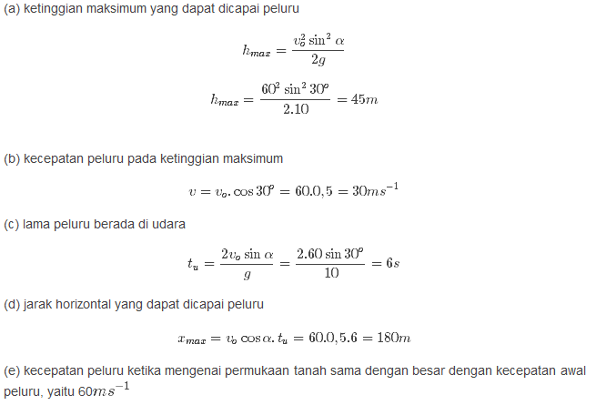

Gerak Parabola

Contoh Soal dan Pembahasan
1. Sebuah bola dilempar ke atas dengan sudut  terhadap sumbu x.(a) Berapakah tinggi maksimal yang dapat dicapai bola?(b) Berapa waktu yang diperlukan bola agar mencapai tinggi maksimal? (c) Berapa jarak maksimal yang bisa ditempuh bola?
Penyelesaian :
 2. Peluru A dan B ditembakkan dari senapan yang sama dengan sudut elevasi berbeda. Peluru A dengan sudut 30o dan peluru B dengan sudut 60o. Tentukanlah perbandingan tinggi maksimum yang dicapai peluru A dan peluru B.
Penyelesaian :

Dari rumus di atas jelas terlihat bahwa ketinggian maksimum berbanding terbalik dengan gravitasi dan berbanding lurus dengan kuadrat kecepatan awal dan sudut elevasi. Karena kecepatan awal peluru dan gravitasi sama, maka perbandingan antara ketinggian maksimum A dan B hanya bergantung pada besar sudut elevasi masing-masing peluru.

3. Seorang murid menendang bola dengan kecepatan awal pada arah vertikal 9 m/s dan kecepatan awal pada arah mendatar 12 m/s. Tentukanlah besar kecepatan awal bola tersebut.
Penyelesaian :

4. Sebuah bola ditendang dengan sudut elevasi 53o dan kecepatan awal 5 m/s. Tentukanlah jarak tempuh maksimum yang akan dicapai bola tersebut.
Penyelesaian :

5. Jika sebuah peluru ditembakkan dengan sudut elevasi 37o dan kecepatan awal 10 m/s, maka tentukanlah kecepatan peluru setelah 0,4 detik.
Penyelesaian :

6. Tentukanlah waktu yang dibutuhkan untuk mencapai ketinggian maksimum jika sebuah batu dilempar dengan sudut elevasi 30o dan kecepatan awal 6 m/s.
Penyelesaian :

7. Tentukan ketinggian maksimum yang dicapai oleh sebuah bola yang ditendang dengan kecepatan awal 5 m/s pada sudut elevasi 37o.
Penyelesaian :

8.Bola disepak membentuk sudut 30o terhadap permukaan
lapangan dengan kecepatan awal 10 m/s. Tentukan :
(a) Ketinggian maksimum
(b) Kelajuan bola pada ketinggian maksimum
(c) Selang waktu bola tiba di permukaan lapangan
(d) Jarak horisontal terjauh yang dicapai bola
Penyelesaian :
 9. Bola dilempar dari tepi bangunan setinggi 10 meter, membentuk sudut 30o terhadap horisontal dengan kecepatan awal 10 m/s. Tentukan: (a)Ketinggian maksimum diukur dari permukaan tanah (b) Selang waktu bola mencapai tanah (c) jarak horisontal terjauh diukur dari tepi bangunan
Penyelesaian :
 
10. Sebuah meriam dimiringkan pada sudut 30o terhadap horizontal.
Meriam tersebut menembakkan sebutir peluru dengan kecepatan sebesar 60 m/s.
Tentukan:
(a) ketinggian maksimum yang dapat dicapai peluru
(b) kecepatan peluru pada ketinggian maksimum
(c) lama peluru berada di udara
(d) jarak horizontal yang dapat dicapai peluru
(e) kecepatan peluru ketika mengenai permukaan tanah
Penyelesaian :
Copyright © 2019 Universitas Mercubuana